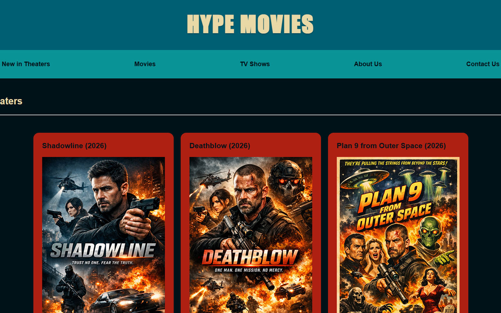

Hype Movies
Project Context
This project was created as a modular landing‑page build focused on clean hierarchy, responsive layout patterns, and reusable components. The goal was to design a flexible template that could scale into a full brand site — with a hero section, service blocks, image gallery, and a structured footer. It served as both a design exercise and a demonstration of production‑ready HTML/CSS architecture.
Requirements
- Build a fully responsive landing page using clean, semantic HTML
- Create a hero section with strong visual hierarchy and centered messaging
- Design a services grid with icons and descriptive text
- Implement a gallery section with consistent spacing and alignment
- Maintain modularity so each section can be reused in future builds
- Keep the code lightweight and easy to maintain
- Ensure cross‑browser consistency without hacks
Approach
I approached the layout using a component‑driven structure, where each section (hero, services, gallery, footer) functions as an independent module. This allowed for clean separation of concerns and easy scalability.
Key decisions included:
- Using flexbox and grid for predictable, responsive alignment
- Establishing a consistent spacing system to unify the visual rhythm
- Applying clear typographic hierarchy to guide the user through the page
- Keeping the CSS modular, with reusable classes for layout, spacing, and typography
- Designing the hero to anchor the page with strong contrast and centered content
- The result is a layout that feels structured, modern, and adaptable to any brand style.
Tech Stack Used
- HTML5 — semantic structure, modular sectioning
- CSS3 — flexbox, grid, spacing system, responsive breakpoints
- GitHub Pages — hosting and version control workflow
Challenges Overcome
-
Achieving consistent spacing across sections
Different content blocks (hero, services, gallery) needed unified vertical rhythm. I solved this by defining a spacing scale and applying it globally. -
Balancing image sizes in the gallery
Images with different aspect ratios caused uneven rows. I resolved this using CSS object‑fit and a fixed‑ratio container to maintain visual consistency. -
Ensuring clean responsiveness without layout
collapse
Some early breakpoints caused text wrapping and misalignment. I refined the grid and flex rules to maintain structure from mobile to desktop. -
Maintaining modularity
The goal was to avoid “one‑off” styling. I refactored repeated patterns into reusable utility classes, making the layout scalable and easier to maintain.
Outcome
The final build is a clean, modular landing page that demonstrates your strengths in layout architecture, responsive design, and component‑based thinking. It serves as a strong template for future client sites and showcases your ability to create production‑ready front‑end structures with clarity and precision.